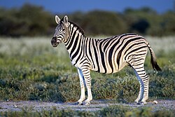
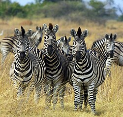

The Plains Zebra is the most common and widespread species of zebra.
Scientific Name: Equus quagga
Common Name: Plains Zebra
Habitat: Grasslands and savannas of Africa
Diet: Herbivore (primarily grass)
Conservation Status: Least Concern
The plains zebra (Equus quagga, formerly Equus burchellii) is the most common and geographically widespread species of zebra.
Its range is fragmented, but spans much of southern and eastern Africa south of the Sahara.

Six or seven subspecies have been recognised, including the quagga which was thought to be a separate species.
More recent research supports variations in zebra populations being clines rather than subspecies.
Plains zebras are intermediate in size between the larger Grévy's zebra and the smaller mountain zebra
and tend to have broader stripes than both. Great variation in coat patterns exists between clines and individuals.
The plains zebra's habitat is generally, but not exclusively, treeless grasslands and savanna woodlands, both tropical and temperate.
They generally avoid desert, dense rainforest and permanent wetlands.
Zebras are preyed upon by lions and spotted hyenas, Nile crocodiles and, to a lesser extent, leopards, cheetahs and African wild dogs.